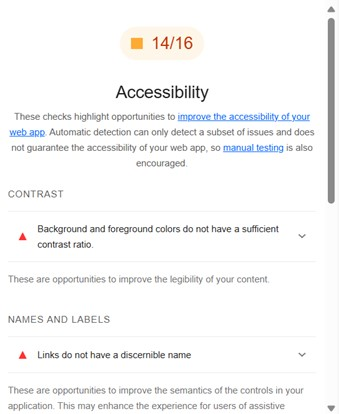

Tilgjengelighet (Accessibility) er en viktig del av webdesign og hjelper å sikre at alle brukere, uavhengig av funksjonsnivå, kan bruke nettsiden. Dette er lovpålagt i mange land, blandt dem er Norge med Likestillings- og diskrimineringsloven. I arbeidet vårt med denne siden har vi jobbet for å gjøre forbedringer som vil hjelpe blant annet skjermlesere.
Lighthouse
Vi brukte den automatiserte testen ‘lighthouse’, et verktøy for testing av nettsiders ytelse og tilgjengelighet, for å teste sidenes ytelse og accessibility.

ActivityIndex
Spesifikt for actvity så har vi justert farge på tekst med for liten kontrast, for å sikre at det er lesbart for brukere med nedsatt syn.
I tillegg, i tråd med ‘lighthouse’ sine tilbakemeldinger så passet vi på at linker i tekst var passende beskrivende, og la inn aria-labels ellers:
Aria-label for ‘slider’ har fått en aria-live= «polite» for å informere skjermlesere om at siden kan endres dynamisk. Dette gjør at skjermleseren kun oppdaterer brukeren om endringer når den er ferdig med å lese opp det som allerede er i fokus.
Andre justeringer
Utenom dette så har vi justert sidene for å gjøre dem mest mulig enkle for alle brukere. Vi har lagt til en skjermleservennlig "Hopp til hovedinnhold"-lenke øverst på siden. Dette gir brukere muligheten til å hoppe over navigasjonsmenyen og gå direkte til hovedinnholdet. Dette er spesielt nyttig for skjermleserbrukere og personer som navigerer med tastatur. Koden ser slik ut:
Tabellen i "Kommende aktiviteter"-seksjonen er gjort mer tilgjengelig ved bruk av
og scope="col" for kolonneoverskrifter. Dette gir skjermlesere kontekst om hva hver celle er. Koden for tabellen ser slik ut:
Lighthouse
Våre første resultater viste at activity-siden fikk 14/16 poeng og index-siden fikk 19/22 poeng. Etter flere justeringer, inkludert anbefalinger fra Lighthouse og egne justeringer, fikk vi 25/25 og 25/27 poeng. I gjennom kodingen vår har vi generelt vært fokuserte på å legge inn beskrivende alt verdier på bildene og forklarende tekst-linker. Nettsider som prioriterer tilgjengelighet hjelper alle med å bli inkludert i det digitale miljøet, og er da også nyttig for nettside-eiere som får flere brukere.